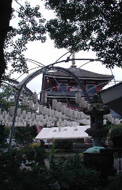
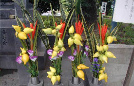
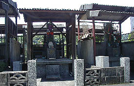
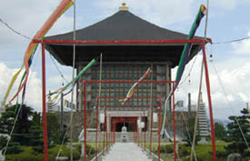
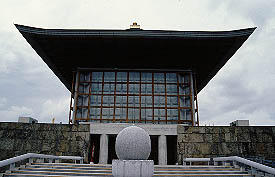
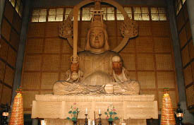
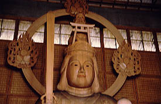

寺の名前は最福寺。巨人の清原や家田荘子が出家した寺としても有名だ。 で、境内の様子。  あまりスタイルの良くない三重の塔の隣に本堂。 その前に吊るされた提灯の数が尋常ではない。
 墓地には色鮮やかな花が供えられていてなかなか南国らしくてよろしい。 話はかわるが、聞くところによると鹿児島では毎日墓参りに来る人も結構多いそうだ。墓に対して特別な思い入れがあるのだろうか。 ここの墓地ではないがこんな墓も見かけた。墓に屋根がついているなんて見た事もないのでかなり驚いたが、これも墓に対する特別な思い入れの成せる技なのだろうか。 
・・・閑話休題。弁天様である。   墓地を抜けるとやけに金のかかってそうな庭の向うに大仏殿が見える。 ガラス張りの近代的な大仏殿。どこぞの博物館といった趣である。いかにも建築家が考えそうな感じの建物だ。 も少し豚骨スープのようなコテッとした味わいがあったら嬉しいんですけど・・・  で、内部。
これが日本一大きい弁天様である。 木彫で18.5メートルもある。 頭の上の鳥居だけでもそのまま神社で使えそうな大きさである。 ハッキリいって木彫で何でそこまで大きなものを造らなければならないのか？ 何所だか知らないが日本で二番目に大きい弁天様の事も考えて頂きたいもんである。 以前読んだ「炎の仏師 松本明慶」とかいう本にここの弁天様を製作する話が出ていた。 細かい事は忘れたがやっぱり相当大変みたい。木彫でここまでデカイの。 それとあまり触れたくないけどお金の方も大変でしょ。大仏殿と弁天様の総額なんて恐ろしくて想像も出来まへん。ま、清原と家田荘子ですから。  弁天様の写真の肩が黒いのは影ではない。煤だ。 白木の弁天様は全体的に煤がついていて新しい仏像の割には黒ずんでいる。いかにもしょっちゅう護摩焚きやってますって感じ。ピカピカのガラス建築とのアンバランスが印象的だ。
ガラス張りなんだから本堂の中からドーンとこの風景が見えるとか、夜になるとブラインドが全開になって外からも大弁天さんが拝めるとか、弁天様の近くまでフリークライミング可とか、どうせなら滅茶滅茶サイケデリックなステンドグラスにしちゃうとかもイイと思うのだが、どんなもんでしょう？ 建物があまりにも建築家任せでチョットすっきりし過ぎな感じでした。 ちなみにお土産類はここの住職さんの著書をはじめステッカー、絵葉書、お守りなどオリジナル商品が充実。 一番シブかったのは見た事もない演歌歌手のカセットテープ。曲名が「不動道」。
2001.7.
最福寺のホームページはこちら
珍寺大道場 HOME